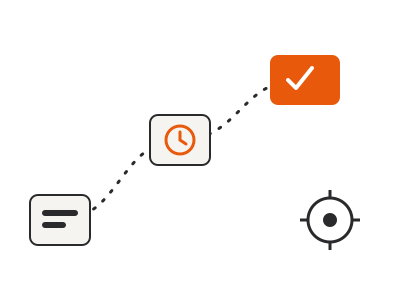

Health-Flare
An open-source, offline-only chronic illness symptom tracker - the successor to Flaredown. Currently in App Store review.
Automated Bytes is the parent organization behind people-centric IT and automation work - pragmatic tooling that removes manual drudgery, built with security and privacy as a prerequisite, not an afterthought.

Technology should serve people, not the other way around. Every engagement starts with how a team actually works today, then finds - or creates - the parts of modern computing that genuinely help, instead of forcing a process to fit a tool.
Automation and tooling are only worth building when they remove real manual drudgery. We favor pragmatic solutions over impressive-looking ones - scripts, integrations, and systems that keep working after we leave the room.
Data security and privacy are a prerequisite, built into every engagement and every project from the start - not a checklist bolted on at the end. See the Security & Privacy page for the specifics.
Rather than take our word for how we build, you can look at what we've shipped. Our flagship work is open source.
An open-source, offline-only chronic illness symptom tracker - the successor to Flaredown. Currently in App Store review.
An open-source, offline-only cycle and reproductive health tracker - the second app in the Health-Flare family.
If something in your day-to-day is manual, repetitive, or feels riskier than it should be, that's a good place to start a conversation.
Contact Automated Bytes